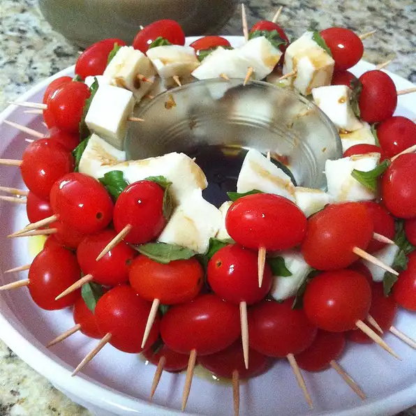

Caprese On A Stick

This is a great, easy finger appetizer. I came up with it because I love Caprese but it was difficult to serve at large parties. Putting the same ingredients on a toothpick yielded great results.
What do you need?
- 1 pint cherry tomatoes, halved
- 1 (.6 ounce) package fresh basil leaves
- 1 (16 ounce) package small fresh mozzarella balls
- toothpicks
- 3 tablespoons olive oil
- salt and pepper to taste
How to make it?
- Thread a tomato half, a small piece of basil leaf, and a mozzarella ball onto toothpicks until all ingredients are used
- Drizzle the olive oil over the tomato, cheese and basil, leaving the end of the toothpick clean
- Sprinkle with salt and pepper
- Serve immediately!
Bon Appétit!
Go Back